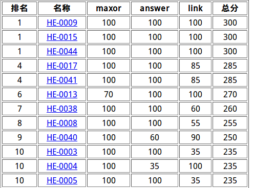
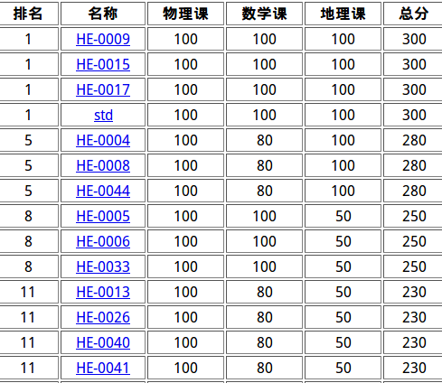

考的不是很好，T1T2没区分度，T3想的太少，考试后期几乎都是在摸鱼,bitset乱搞也不敢打，只拿到了35分，跟前面的差距很大
标签：
二进制+贪心
题解：
首先x,y中一定有一个是R，考虑L的取值:对于每一位分为x中有没有讨论:
1>有 如果这一位不加以后全加可以>=L则不选，否则选
2>没有 如果这一位选上以后全不加也无法<=R则不选，否则选
因为位数从高到低枚举，所以贪心是正确的
标签：
折半搜索+二分
题解：
2<=n<=40,显然是要折半搜索的，答案满足单调性，可以二分判断，check时复杂度最好是1<<20，而不是2e7的值域
说实话这道题比T1要简单
标签：
啊啊啊起个标签好蓝啊
题解：
首先证明环的数量是$m*sqrt(m)$的：
考虑最坏情况：一定是一个竞赛图，那么点数就是$sqrt(m)$，环数最多是$m*sqrt(m)$
有了这个性质下面的算法便有了复杂度保证:
1>对于第一问：
把每个点的出边按w[to]降序排序，考虑枚举$ x,y((x,y)\in{edge}),z((x,z)\in{edge}) $
只需要找到第一个不是三元环的z点便可以更新答案，复杂度与枚举到的环有关，而每个环最多会被枚举到3次，所以复杂度是对的
2>对于第二问：
考虑容斥：
用每个点的出点的权值和的平方减去平方的和，
再减去三元环的的情况，我是枚举u,v用bitset求出b[u]&b[v].count()便是有u，v的三元环的个数

T1T2仍然没区分度，T3原题没看出来，总排rk10，翻盘失败
标签:
物理?
题解：
迭代至稳定或者O(1)求都能过
标签:
组合数学
题解：
我们发现背包的两个决策最多差一，直接用组合数解决即可
标签：
线段树分治
题解：
考虑把所有的操作离线，之后把一条边生效的区间扔进线段树里，跑一遍线段树分治并用一个栈来实现撤销